무선설비기사 (2016-10-08 기출문제)
1과목: 디지털 전자회로
1. 60[Hz]의 정현파 신호가 전파정류기에 입력될 경우 출력신호의 주파수는 얼마인가?
- 10[Hz]
- 30[Hz]
- 60[Hz]
- 120[Hz]
(정답률: 85%)

2. 변압기의 입력단 1차 권선비와 출력단 2차 권선비가 1:2일 때, 출력전압은 입력전압의 몇 배인가?
- 0.5배
- 1배
- 1.5배
- 2배
(정답률: 80%)
3. 스위칭 정전압 제어기에서 제어 트랜지스터가 도통되는 시간은?
- 부하 변동에 대응하는 펄스 유지 기간 동안
- 항상
- 과부하가 걸린 동안
- 전압이 정해진 제한을 넘은 동안
(정답률: 74%)
4. 다음과 같은 증폭기의 교류 입력전압의 크기가 20[mV]일 때 교류 출력전압의 크기는 약 얼마인가?
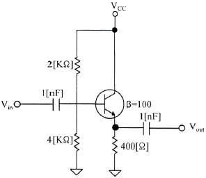
- 20[mV]
- 30[mV]
- 40[mV]
- 50[mV]
(정답률: 70%)
5. 다음 중 FET(Field Effect Transistor)에 대한 설명으로 틀린 것은?
- 입력저항이 수 [MΩ]으로 매우 크다.
- 다수 캐리어에 의해 동작하는 단극성 소자이다.
- 접합트랜지스터(BJT)보다 동작속도가 빠르다.
- 전압제어용 소자이다.
(정답률: 74%)
6. 다음 그림과 같은 부궤환 증폭기 회로의 궤환율은?
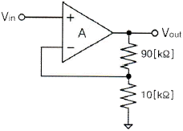
- 10
- 1.1
- 0.5
- 0.1
(정답률: 65%)
7. 다음 그림과 같은 연산증폭 회로의 전압이득(Vo/Vs)은? (단, 증폭기는 이상적이라고 가정하며, R1=R2=R3=30[kΩ], R4=2[kΩ]이다.)
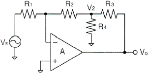
- -14
- -17
- -20
- -23
(정답률: 67%)
8. 발진기에서 기본 증폭기의 전압증폭도가 A이고, 궤환율을 β라고 했을 때 발진이 발생되는 조건은?
- A=100, β=1
- A=100, β=0.1
- A=100, β=0.01
- A=100, β=0
(정답률: 77%)
9. RC 발진회로에서 RC 시정수를 높게 할 경우 발진주파수는 어떻게 변하는가?
- 발진주파수가 높아진다.
- 발진주파수가 낮아진다.
- 무한대가 된다.
- 아무런 변화가 없다.
(정답률: 70%)
10. 400[Hz]의 정현파 변조신호로 주파수 변조를 하였을 때 변조지수가 50이었다. 이 때 최대주파수편이 Δf는 얼마인가?
- 20[kHz]
- 40[kHz]
- 80[kHz]
- 100[kHz]
(정답률: 60%)
11. FM 검파 방식 중 주파수 변화에 의한 전압 제어 발진기의 제어 신호를 이용하여 복조하는 방식은?
- 계수형 검파기
- PLL형 검파기
- 포스터-실리 검파기
- 비 검파기
(정답률: 82%)
12. 다음 중 그림과 같은 변조파형을 얻을 수 있는 변조방식에 대한 설명으로 옳은 것은?
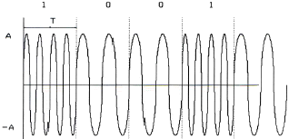
- 정현파의 주파수에 정보를 싣는 FSK 방식으로 2가지 주파수를 이용한다.
- 정현파의 진폭에 정보를 싣는 ASK 방식으로 2가지 진폭을 이용한다.
- 정현파의 진폭에 정보를 싣는 QAM 방식으로 2가지 진폭을 이용한다.
- 정현파의 위상에 정보를 싣는 2위상 편이변조방식이다.
(정답률: 79%)
13. 비안정 멀티바이브레이터 회로에서 콜렉터 전압의 파형은?
- 구형파
- 스텝파
- 임펄스파
- 정현파
(정답률: 75%)
14. RL 회로에서 시정수는 어떻게 정의하는가?
- RL
- L/R
- R/L
- 1/(RL)
(정답률: 67%)
15. 2진수 (101101)2을 10진수로 올바르게 표시한 것은?
- 40
- 45
- 50
- 55
(정답률: 80%)
16. 그레이 코드(Gray Code) 1110을 2진수로 변환하면?
- 1110
- 1100
- 1011
- 0011
(정답률: 77%)
17. RS 플립플롭 호로의 출력 Q 및
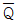
는 리셋(Reset) 상태에서 어떠한 논리값을 가지는가?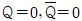
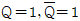
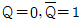
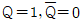
(정답률: 76%)
18. 다음 중 동기식 카운터에 대한 설명으로 옳은 것은?
- 플립플롭의 단수는 동작 속도와 무관하다.
- 논리식이 단순하고 설계가 쉽다.
- 전단의 출력이 다음 단의 트리거 입력이 된다.
- 동영상 회로에 많이 사용된다.
(정답률: 68%)
19. 지연 시간 50[ns]의 플립플롭을 사용한 5단 리플 카운터의 동작 최고 주파수는?
- 1[MHz]
- 4[MHz]
- 10[MHz]
- 20[MHz]
(정답률: 51%)
20. 조합 논리 회로 중 0과 1의 조합으로 부호화를 행하는 회로로 2n개의 입력선과 n개의 출력선으로 구성된 것은?
- 디코더(Decoder)
- DEMUX
- MUX
- 인코더(Encoder)
(정답률: 70%)
2과목: 무선통신 기기
21. 다음 중 아날로그 신호의 진폭변조(AM) 방식에 해당되지 않는 것은?
- DSB-SC(Double Side Band Suppressed Carrier)
- SSB(Single Side Band)
- VSB(Vestigial Side Band)
- ASK(Amplitude Shift Keying)
(정답률: 71%)
22. 변조도 m=1(100[%])인 경우 SSB(Single Side Band) 송신기의 평균 전력은 SB-LC(Double Side Band - Large Carrier) 송신기 평균 전력에 비해 어느 정도 소요되는가?
- 1/2배
- 1/3배
- 1/4배
- 1/6배
(정답률: 52%)
23. 다음 그림은 어떤 변조방식의 블록도를 나타내는 것인가? (단, m(t) 는 입력정보이고, Fc는 반송주파수이다.)
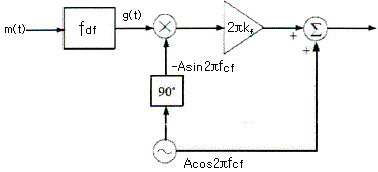
- Narrow Band PM(Phase Modulation)
- Narrow Band FM(Frequency Modulation)
- DSB-TC(Double Side Band - Transmitted Carrier)
- VSB(Vestigial Side Band)
(정답률: 75%)
24. 다음 중 직접 FM 변조방식이 아닌 것은?
- 콘덴서 마이크로폰을 이용한 변조
- 가변용량 다이오드를 이용한 변조
- 리액턴스관 변조
- 암스트롱 변조
(정답률: 80%)
25. 다음 중 FSK(Frequency Shift Keying) 변조방식과 ASK(Amplitude Shift Keying) 변조방식에 대한 설명으로 틀린 것은?
- FSK 변조방식이 ASK 변조방식에 비해 점유대역폭이 더 넓다.
- FSK 변조방식이 ASK 변조방식에 비해 오류확률이 낮다.
- 두 변조방식 모두 비동기 검파 및 동기 검파가 가능하다.
- ASK 변조방식이 FSK 변조방식보다 비선형 전송채널 환경에 적합하다.
(정답률: 62%)
26. 다음의 그림에 나타낸 파형은 어떤 변조방식에 대한 신호파형인가?
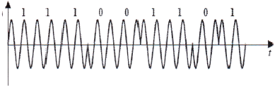
- PSK(Phase Shift Keying)
- ASK(Amplitude Shift Keying)
- FSK(Frequency Shift Keying)
- QAM(Quadrature Amplitude Modulation)
(정답률: 83%)
27. 다음 중 디지털 신호에 따라 반송파의 진폭과 위상을 동시에 변화시키는 변조방식은?
- ASK(Amplitude Shift Keying)
- QPSK(Quadrature Phase Shift Keying)
- QAM(Quadrature Amplitude Modulation)
- OQPSK(Offset Quadrature Phase Shift Keying)
(정답률: 85%)
28. 100[kbps] 데이터율로 디지털 데이터를 전송할 경우 16-ary QAM의 심볼전송률[sps]은?
- 25[ksps]
- 50[ksps]
- 80[ksps]
- 160[ksps]
(정답률: 83%)
29. 다음 중 레이다 기술에 대한 설명으로 틀린 것은?
- 야간이나 시계가 불량한 경우 레이다를 사용하면 안전한 항해를 할 수 있다.
- 거리와 방위를 구할 수 있으므로 목표물의 위치 및 상대속도 등을 구할 수 있다.
- 특수 레이다의 경우 열대성 폭풍(태풍)의 위치와 강우의 이동 파악 등 다양한 용도로 사용할 수 있다.
- 기상조건에 영향을 많이 받으므로 주로 가시거리 내에서 사용된다.
(정답률: 85%)
30. 다음 중 위성을 이용하여 선박에서 위치를 측정할 수 있는 장치는?
- LORAN C
- DECCA
- GPS
- Localizer
(정답률: 85%)
31. 다음 중 납 축전지의 단자 전압 변화 원인은?
- 외부 충격
- 단자 접촉 불량
- 전해액의 비중
- 양극판 재질
(정답률: 83%)
32. 다음 중 충전 종료시 축전지의 상태로 옳은 것은?
- 전해액의 비중이 낮아진다.
- 단자 전압이 하강한다.
- 가스(물거품)가 발생한다.
- 전해액의 온도가 낮아진다.
(정답률: 82%)
33. 다음 중 전력장치인 수전설비에 해당하지 않는 것은?
- 비교기
- 유입개폐기
- 단로기
- 자동 전압 조정기
(정답률: 81%)
34. 다음 중 태양전지의 전력량을 제어하기 위한 기술은?
- 접지 기술
- 솔라셀 설치 기술
- 인공강우 기술
- 인버터 컨트롤 기술
(정답률: 79%)
35. 다음 중 AM송신기의 전력 측정방법이 아닌 것은?
- 진공관 전력계법
- 전구 부하법
- 안테나 실효저항법
- 열량계법
(정답률: 74%)
36. 다음 중 필터법을 이용한 송신기의 왜율 측정에 필요하지 않는 것은?
- LPF(Low Pass Filter)
- BPF(Band Pass Filter)
- HPF(High Pass Filter)
- 감쇠기
(정답률: 78%)
37. 실효높이가 10[m]인 안테나에 0.08[V]의 전압이 수신되었을 때 이 지점의 전계강도는 약 몇 [dB]인가? (단, 1[μV/m]를 0[dB]로 한다.)
- 78[dB]
- 88[dB]
- 98[dB]
- 108[dB]
(정답률: 67%)
38. 다음 중 급전선의 특성 임피던스 Zo와 급전선을 통과하는 전파의 전파속도를 v로 표현할 경우 급전선이 가지는 임피던스값(L)을 구하는 식으로 맞는 것은?
- Zo / v
- v / Zo
- v × Zo
- 1/ ( v× Zo)
(정답률: 80%)
39. 인버터의 스위칭 주파수가 2[kHz]가 되려면 주기는 몇 [ms]로 해야 하는가?
- 0.1[ms]
- 0.5[ms]
- 1[ms]
- 10[ms]
(정답률: 84%)
40. 어떤 주파수의 교류를 다른 주파수의 교류로 변환하는 주파수 변환장치를 무엇이라 하는가?
- 쵸퍼(Chopper)
- 정류기(Rectifier)
- 사이클로 컨버터(Cyclo Converter)
- 인버터(Inverter)
(정답률: 76%)
3과목: 안테나 공학
41. 비유전율(εs)이 1이고 비투자율(μs)이 9인 매질 내를 전파하는 전자파의 속도는 자유공간을 전파할 때와 비교해서 몇 배의 속도가 되는가?
- 2배
- 1/2배
- 3배
- 1/3배
(정답률: 87%)
42. 유전체에서 변위전류를 발생하는 것은?
- 분극 전하밀도의 시간적 변화
- 분극 전하밀도의 공간적 변화
- 전속밀도의 시간적 변화
- 전속밀도의 공간적 변화
(정답률: 72%)
43. 자유공간에서 단위 면적당 단위 시간에 통과하는 전자파 에너지가 3[W/m2 ]일 경우 전계강도는 약 얼마인가?
- 8.45[V/m]
- 16.81[V/m]
- 33.63[V/m]
- 45.65[V/m]
(정답률: 75%)
44. 다음 중 동조 급전선에 대한 설명으로 틀린 것은?
- 급전선상에 정재파가 존재한다.
- 급전선의 길이가 길 때 사용한다.
- 임피던스 정합장치가 불필요하다.
- 전송효율이 비동조 급전선보다 낮다.
(정답률: 67%)
45. 다음 중 진행파 안테나의 특징으로 옳은 것은?
- 임피던스 부정합 상태
- 양방향성
- 진행파와 반사파의 합성파
- 단일 지향성
(정답률: 75%)
46. 정재파비가 1일 때 선로에는 어떤 성분의 신호가 존재하는가?
- 정재파
- 반사파
- 진행파
- 원편파
(정답률: 79%)
47. 다음 중 VHF(Very High Frequency)대에서 가장 많이 사용되는 급전선은?
- 평행 4선식
- 동축케이블
- 도파관
- 평행 3선식
(정답률: 74%)
48. 다음 중 도파관의 특징으로 틀린 것은?
- 방사 손실이 없다.
- 유전체 손실이 적다.
- 저역 통과 여파기로서 작용을 한다.
- 표피작용에 의한 도체의 저항손실이 매우 적다.
(정답률: 78%)
49. 반치각이란 주엽의 최대 복사 방향 강도(방향)에 대해 몇 [dB]가 되는 두 방향 사이의 각을 말하는가?
- 0[dB]
- -3[dB]
- -6[dB]
- -12[dB]
(정답률: 83%)
50. 미소다이폴로부터 발생하는 전자계 중 근거리에서 주가 되는 성분은?
- 복사계
- 유도계
- 정전계
- 전류계
(정답률: 59%)
51. 다음 중 절대이득과 상대이득, 지상이득 과의 관계를 옳게 표현한 것은?
- 절대이득 = 상대이득 × 1.64
- 절대이득 = 상대이득 × 2.56
- 절대이득 = 지상이득 × 3.68
- 절대이득 = 지상이득 × 5.15
(정답률: 84%)
52. 다음 중 철탑의 높이가 같은 경우에 일반적으로 방사 효율이 가장 낮은 안테나는?
- 연장코일을 사용하는 안테나
- 역 L형 안테나
- 우산형 안테나
- 원정관(Top Ring) 안테나
(정답률: 76%)
53. 다음 중 애드콕(Adcock) 안테나의 특징이 아닌 것은?
- 야간오차 방지효과가 있다.
- 수평면내 8자형 지향성을 갖는다.
- 방향탐지용 안테나이다.
- 수직편파 성분은 결합코일에서 서로 상쇄된다.
(정답률: 61%)
54. 다음 중 다중 접지 방식에 대한 설명으로 틀린 것은?
- 한 점의 접지만으로는 불충분한 경우, 여러 점을 직렬로 접속하여 접지 저항을 줄이는 방식이다.
- 안테나 전류가 기저부 부근에 밀집하는 것을 피하고 접지저항을 감소시키기 위해 사용한다.
- 접지 저항은 1~2[Ω] 정도이다.
- 대전력 방송국의 안테나 접지에 사용한다.
(정답률: 80%)
55. 다음 중 지표파 전파의 특징으로 틀린 것은?
- 지표면 요철에 큰 영향을 받지 않는다.
- 대지의 도전율이 클수록 멀리 전파한다.
- 주파수가 높을수록 멀리 전파한다.
- 수직편파가 잘 전파한다.
(정답률: 69%)
56. 다음 중 라디오 덕트에 대한 설명으로 틀린 것은?
- 덕트 내에서 초굴절 현상이 생긴다.
- 가시거리보다 훨씬 먼 거리를 전파할 수 있다.
- 도파관과 같이 차단 주파수 이하의 주파수만 통과시킨다.
- 역전층에 의해 발생한다.
(정답률: 68%)
57. 다음 중 전리층의 종류에 대한 설명으로 틀린 것은?
- D층의 전자밀도는 다른 전리층에 비해 낮다.
- E층은 야간에 장파를 반사시킨다.
- F층은 다른 전리층보다 높은 곳에 위치한다.
- Es층은 E층보다 전자밀도가 낮다.
(정답률: 68%)
58. 다음 중 전리층의 급격한 이동으로 반사파와 측파대가 받는 감쇠의 정도가 달라져서 생기는 페이딩에 대한 설명으로 틀린 것은?
- 선택성 페이딩이다.
- 주파수 다이버시티를 사용하여 방지할 수 있다.
- SSB(Single Side Band) 통신 방식을 사용하면 발생하지 않는다.
- AGC(Automatic Gain Control) 장치를 사용하여 방지할 수 있다.
(정답률: 76%)
59. 태양 표면의 폭발로 인하여 20[MHz] 이상의 높은 주파수에서 전파 장해가 심하게 나타나며 위도가 높은 지방일수록 영향이 더 큰 것은 어떤 현상 때문인가?
- 자기 폭풍(Magnetic Storm)
- 델리저 현상(Delinger Phenomenon)
- 코로나 손실(Corona Loss)
- 룩셈부르크 효과(Luxemburg Effect)
(정답률: 82%)
60. 100[MHz]의 신호를 송신안테나를 통해 100[km] 떨어진 수신 안테나로 전송할 때 자유공간 전파 손실은 얼마인가?
- 92.45[dB]
- 102.45[dB]
- 112.45[dB]
- 122.45[dB]
(정답률: 61%)
4과목: 무선통신 시스템
61. 50[MHz]의 반송파가 10[kHz]의 정현파에 FM 변조되어 최대주파수 편이가 50[kHz]일 경우에 FM신호의 대역폭은?
- 60[kHz]
- 80[kHz]
- 120[kHz]
- 240[kHz]
(정답률: 79%)
62. 30개의 구간을 망형으로 연결하기 위해 필요한 회선 수는 몇 개인가?
- 435개
- 400개
- 380개
- 200개
(정답률: 86%)
63. 다음 중 디지털 통신시스템의 성능 평가에 가장 적합한 것은?
- 왜율
- SINAD
- BER
- S/N
(정답률: 82%)
64. 다음 중 무선통신의 다중접속 방식에 대한 설명으로 틀린 것은?
- 다중접속 방식은 여러 사용자들이 동시에 통화할 수 있도록 하기 위해 공용 자원을 공유하는 것을 말하고, 이 공용 자원은 무선 주파수이다.
- 전통적인 FDMA(Frequency Division Multiple Access) 방식에서 각각의 사용자는 신호를 전송할 수 있는 특정 주파수 대역을 할당받는다.
- TDMA(Time Division Multiple Access) 방식에서 각 사용자는 전송하기 위한 서로 다른 타임 슬롯을 할당 받는데, 사용자 구분은 시간영역에서 이루어진다.
- CDMA(Code Division Multiple Access) 방식에서 각 사용자의 협대역 신호는 보다 넓은 대역폭으로 확산되며, 넓은 대역폭은 정보를 전송하기 위해 요구되는 최소 대역폭보다 좁다.
(정답률: 83%)
65. 다음 중 마이크로파 통신 방식의 일반적인 특성이 아닌 것은?
- 가시거리 통신이다.
- 광대역 통신이 가능하다.
- 외부 잡음의 영향이 적다.
- 전리층 반사파를 이용하여 전파한다.
(정답률: 63%)
66. 다음 중 위성통신 주파수를 업 링크와 다운 링크로 다른 주파수를 사용하는 주된 이유는?
- 주파수 충돌
- 주파수 간섭
- 주파수 잡음
- 주파수 반사
(정답률: 80%)
67. 어떤 셀(Cell) 내의 통화량이 39.5[Erl]이고, 1호당 평균점유시간은 100초일 때 이 Cell에 1시간당 발생하는 호(Cell)의 수는?
- 711[호/시간]
- 1,422[호/시간]
- 2,133[호/시간]
- 2,844[호/시간]
(정답률: 77%)
68. 다음 중 CDMA(Code Division Multiple Access) 이동통신 시스템에서 전력제어 기술에 대한 설명으로 틀린 것은?
- 원근문제(Near-Far Problem)을 해결하여 시스템 용량을 증대시킨다.
- Closed Loop 전력제어 기술은 빠른 레일리 페이딩을 보상하기 위하여 사용한다.
- Closed Loop 전력제어 기술은 기지국이 상향링크의 PER(Packet Error Rate)을 측정한다.
- Closed Loop 전력제어 기술은 기지국과 단말기 모두가 개입하여 동작한다.
(정답률: 57%)
69. 다음 중 우리나라에서 사용하고 있는 지상파 디지털 TV 전송 표준은?
- NTSC
- ATSC-T
- DVB-T
- ISDB-T
(정답률: 73%)
70. 우리나라의 지상파 DMB에 할당된 주파수 대역과, 한 채널당 사용가능한 주파수 블록 개수가 맞게 짝지어진 것은?
- VHF, 2개
- VHF, 3개
- UHF, 4개
- UHF, 5개
(정답률: 78%)
71. 다음 중 근거리 통신망(LAN)을 사용한 시스템을 정량적으로 평가하는 요소가 아닌 것은?
- 턴 어라운드 타임(Turn-Around Time)
- 응답 시간(Response Time)
- 전송 효율(Throughput)
- 인터 네트워킹(Inter-Networking)
(정답률: 69%)
72. 사람과 사람 사이의 대화도 음파를 통한 일종의 통신이라고 볼 수 있다. 통신 프로토콜의 관점에서 잘못된 것은?
- 두 사람이 사용하는 언어가 서로 다르면 통신이 불가능하다.
- 두 사람이 사용하는 언어를 일종의 프로토콜로 볼 수 있다.
- 두 사람이 대화하는 음성의 주파수가 일치되어야 한다.
- 두 사람 모두 음파를 사용하여 의사를 전달해야 한다.
(정답률: 81%)
73. 다음 중 통신 프로토콜의 주요 특징에 대한 설명으로 틀린 것은?
- Syntax : 데이터 블록의 형식 규정
- Semantics : 에러처리를 위한 제어 정보의 규정
- Timing : 전송속도의 동기나 순서 등의 규정
- Format : 프로토콜의 각 상태의 동작 규정
(정답률: 72%)
74. 다음 중 TCP/IP 계층이 아닌 것은?
- 네트워크계층
- 전송계층
- 표현계층
- 응용계층
(정답률: 62%)
75. 다음 중 OSI(Open System Interconnection) 참조 모델의 각 계층에서 수행하는 기능들에 대한 설명으로 틀린 것은?
- 데이터링크 계층 : 물리적 전송오류 감지
- 네트워크 계층 : 경로 선택
- 전송 계층 : 송신 프로세스와 수신 프로세스간의 연결
- 응용 계층 : 암호화, 압축
(정답률: 72%)
76. 다음 중 무선 LAN 시스템에서 채널을 예약하고 확인하는 등의 과정을 거치기 위해서 사용하는 기법은 무엇인가?
- RTS/CTS
- FHSS
- Back-off
- DFS(Dynamic Frequency Selection)
(정답률: 80%)
77. 다음 중 최적의 무선 환경을 구축하기 위한 기지국 통화량 분산 방법이 아닌 것은?
- 섹터간 커버리지 조정
- 인접 셀간 커버리지 조정
- 기지국 이설 및 추가
- 안테나의 각도 조정
(정답률: 80%)
78. 다음 중 부표 등에 탑재되어 위치 또는 기상 자료 등을 자동으로 송출하는 무선설비는?
- 텔레미터(Telemeter)
- 라디오 부이(Radio Buoy)
- 라디오존데(Radiosonde)
- 트랜스폰더(Transponder)
(정답률: 82%)
79. 다음 중 통신시스템의 장애를 극복하기 위한 Hardware Redundancy 방안이 아닌 것은?
- Duplex
- Active/Standby
- N-version Program
- Spare Redundancy
(정답률: 77%)
80. 다음 중 통신시스템에서 보완에 위협이 되는 요소의 종류가 아닌 것은?
- 피상적 공격(Superficial Attack)
- 수동적 공격(Passive Attack)
- 능동적 공격(Active Attack)
- 비인가 공격(Unauthorized Usage)
(정답률: 77%)
5과목: 전자계산기 일반 및 무선설비기준
81. 다음 중 IP 주소를 사용하여 동종 또는 이종 링크에 다중 접속을 실현할 수 있는 것은?
- Roaming
- Multihoming
- Hand-Off
- Uni-Casting
(정답률: 77%)
82. 다음 중 자외선을 이용하여 지울 수 있는 메모리는 어느 것인가?
- PROM
- EPROM
- EEPROM
- Flash Memory
(정답률: 81%)
83. 컴퓨터가 8비트 정수 표현을 사용할 경우 -25를 부호와 2의 보수로 올바르게 표현한 것은?
- 11100111
- 11100011
- 01100111
- 01100011
(정답률: 69%)
84. 다음 중 2진수 덧셈연산에서 오버플로우(Overflow)가 되는 조건은?
- 두 수에서 부호 자리의 값이 서로 같을 때이다.
- 두 수에서 부호 자리의 값이 서로 다를 때이다.
- 부호자리에서 캐리(Carry)가 있고, 부호 다음 자리(MSB)가 캐리(Carry)가 있을 때이다.
- 부호자리에서 캐리(Carry)가 있고, 부호 다음 자리(MSB)가 캐리(Carry)가 없을 때이다.
(정답률: 64%)
85. 메모리관리에서 빈 공간을 관리하는 Free 리스트를 끝까지 탐색하여 요구되는 크기보다 더 크되, 그 차이가 제일 작은 노드를 찾아 할당해주는 방법은?
- 최초적합(First-Fit)
- 최적적합(Best-Fit)
- 최악적합(Worst-Fit)
- 최후적합(Last-Fit)
(정답률: 86%)
86. 다음 중 컴퓨터의 운영체제에서 로더(Loader)의 주요 기능이 아닌 것은?
- 프로그램과 프로그램 간의 연결(Linking)을 수행한다.
- 출력 데이터에 대해 일시 저장(Spooling) 기능을 수행한다.
- 프로그램이 실행될 수 있도록 번지수를 재배치(Relocation)한다.
- 프로그램 또는 데이터가 저장될 번지수를 계산하고 할당(Allocation)한다.
(정답률: 79%)
87. 몇 개의 관련 있는 데이터 파일을 조직적으로 작성하여 중복된 데이터 항목을 제거한 구조를 무엇이라 하는가?
- Data File
- Data Base
- Data Program
- Data Link
(정답률: 84%)
88. 다음 중 컴파일러(Compiler)에 대한 설명으로 옳은 것은?
- 고급(High Level) 언어를 기계어로 번역하는 언어번역 프로그램이다.
- 일정한 기호형태를 기계어와 일대일로 대응시키는 언어번역 프로그램이다.
- 시스템이 취급하는 여러 가지의 데이터를 표준적인 방법으로 총괄하는 프로그램이다.
- 프로그램과 프로그램 간에 주어진 요소(Factor)들을 서로 연계시켜 하나로 결합하는 기능을 수행하는 프로그램이다.
(정답률: 75%)
89. 다음 중 RISC(Reduced Instruction Set Computer)에 대한 설명으로 틀린 것은?
- CISC(Complex Instruction Set Computer)는 RISC보다 많은 양의 레지스터를 필요로 한다.
- 명령어의 길이가 일정하다.
- 대부분의 명령어들은 한 개의 클럭 사이클로 처리된다.
- 소수의 주소 기법(Addressing Mode)을 사용한다.
(정답률: 67%)
90. 인터럽트의 우선순위를 바르게 나열한 것은?
- 전원 이상 → 기계착오 → 외부 신호 → 입ㆍ출력 → 명령의 잘못 사용 → 슈퍼바이저 호출(SVC)
- 슈퍼바이저 호출(SVC) → 전원 이상 → 기계착오 → 외부 신호 → 입ㆍ출력 → 명령의 잘못 사용
- 슈퍼바이저 호출(SVC) → 입ㆍ출력 → 외부 신호 → 기계착오 → 전원 이상 → 명령의 잘못 사용
- 기계착오 → 외부 신호 → 입ㆍ출력 → 명령의 잘못 사용 → 전원 이상 → 슈퍼바이저 호출(SVC)
(정답률: 72%)
91. 주어진 발사에서 용이하게 식별되고, 측정할 수 있는 주파수를 무엇이라 하는가?
- 기준주파수
- 지정주파수
- 특성주파수
- 필요주파수
(정답률: 67%)
92. 무선설비 등에서 발생하는 전자파가 인체에 미치는 영향을 고려하여 제정한 기준이 아닌 것은?
- 전자파 장해검정기준
- 전자파 인체보호기준
- 전자파 강도 측정기준
- 전자파 흡수율 측정기준
(정답률: 68%)
93. 무선설비의 공동사용 시 무선국 검사수수료 20퍼센트 감면대상 무선국에 해당하지 않는 것은?
- 고정국
- 기지국
- 육상국
- 이동중계국
(정답률: 76%)
94. 다음 중 적합성평가의 전부가 면제되는 기자재가 아닌 것은?
- 외국에 납품할 목적으로 주문제작하는 선박에 설치하기 위해 수입되는 기자재
- 외국으로부터 도입, 임대, 용선 계약한 선박 또는 항공기에 설치된 기자재
- 전시회, 경기대회 등 행사에서 판매를 하기 위한 정보통신기자재
- 판매를 목적으로 하지 아니하고 본인자신이 사용하기 위하여 제작하는 아마추어무선국용 무선설비
(정답률: 64%)
95. 다음 중 적합인증 대상기자재에 해당되지 않는 것은?
- 디지털선택호출장치의 기기
- 자동음성처리시스템
- 키폰시스템
- 전기가열기
(정답률: 79%)
96. 다음 중 송신설비의 전력을 규격력으로 표시하지 않는 것은?
- 아무추어국의 송신설비
- 방송을 행하는 실험국의 송신설비
- 생존정에 사용되는 비상위치지시용 무선표지설비
- 500[MHz] 이하의 주파수의 전파를 사용하는 송신설비로서 정격출력 1와트 이하의 진공관을 사용하는 것
(정답률: 60%)
97. 안테나공급전력이 얼마를 초과하는 무선설비에 사용하는 전원회로는 퓨즈 또는 자동차단기를 갖추어야 하는가?
- 5[W]
- 10[W]
- 30[W]
- 50[W]
(정답률: 61%)
98. 다음 중 무선설비의 안전시설과 관계없는 것은?
- 절연차폐체
- 금속차폐체
- 안테나계의 낙뢰보호장치 및 접지시설
- 피뢰침 보호장치
(정답률: 71%)
99. 다음 중 감리사의 주요 임무 및 책임사항으로 틀린 것은?
- 감리사는 설계감리 업무를 수행함에 있어 발주자와 계약에 따라 발주자의 설계감리 업무를 수행한다.
- 감리사는 해당 설계용역의 설계용역 계약문서, 설계감리 과업내용서, 그 밖의 관계 규정 내용을 숙지하고 해당 설계용역의 특수성을 파악한 후 설계감리 업무를 수행하여야 한다.
- 감리사는 설계용역 성과검토를 통한 검토업무를 수행하기 위해 세부 검토사항 및 근거를 포함한 설계감리 검토목록을 작성하여 관리하여야 한다.
- 감리사는 설계자의 의무 및 책임을 면제시킬 수 있으며, 임의로 설계용역의 내용이나 범위를 변경시키거나 기일 연장 등 설계요역 계약조건과 다른 지시나 결정을 하여서는 안 된다.
(정답률: 88%)
100. 무선설비의 주요 기자재를 검수하는 방법 중 시험에 의한 방법의 검수 내용으로 틀린 것은?
- 검수방법은 감리사가 입회하여 재료제작자의 시험설비나 공장시험장에서 시험을 실시하고 그 결과로 얻은 성적표로 검수한다.
- 감리사가 공공시험기관에 시험을 의뢰 요청하여 실시하고 그 시험 성적 결과에 의하여 검수한다.
- 규격을 증명하는 KS 등의 마크가 표시되어 있는 규격품이나 적절하다고 인정할 수 있는 품질증명이 첨부되어 있는 제품을 대상으로 한다.
- 대상 기자재의 범위는 공사상 중요한 기자재 또는 특별 주문품, 신제품 등으로써 품질 성능을 판정할 필요가 있는 기자재로 한다.
(정답률: 80%)